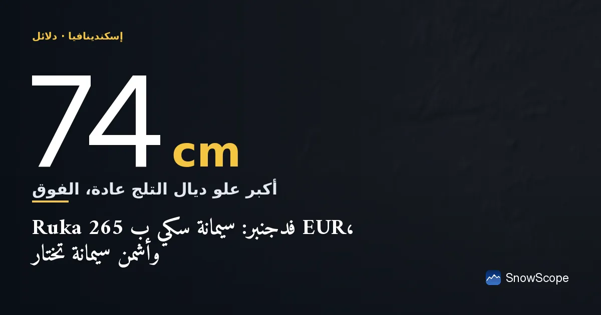

Ruka فدجنبر: سيمانة سكي ب 265 EUR، وأشمن سيمانة تختار
البطاقة ديال 6 نهار لكاين ف المحطة ديال Ruka تكلف 265 يورو ف الموسم 2026-27، واحد من أرخص الأثمان الثابتة ل أسبوع تزلج. التلج أعقد شي: بداية ديسمبر غير مضمونة، لكن من منتصف الشهر التلاتة، الفرصة تتقلب بحال كبيرة ل صالحك، وتوصل لأعلى نقطة 85% من الشتوات ف أسبوع العيد متاع 30 سم أو أكثر.
شوف توقعات التلج مباشرة ديال Ruka فالتطبيق ديال SnowScopeالعلو ديال التلج، التنبيهات والخريطة 3D، فابور.
منين تروح باش تلقى أحسن فرصة ديال التلج
التلج ف Ruka يتراكم طول الشهر. ف الأسبوع الأول (1-7 ديسمبر) غير 39% من الشتوات وصلو ل 30 سم. بحال 8-14 ديسمبر الرقم يطلع لحد 61%، وف منتصف الشهر (15-21 ديسمبر) أنت ف 72%. أسبوع العيد (22-28 ديسمبر) هو الأآمن: 85% من الشتوات كان عندهم 30 سم أو أكثر ف هاد الوقت.
اليوم الأول اللي تلقى فيه 30 سم ف الأرض عادة هو 5 ديسمبر، بحال أن هاد الشي يتبدل من سنة لسنة. إذا بداية ديسمبر هي الخيار اللي ديالك بس، شوف خريطة التلج قبل ما تحجز وتجهز روحك ل غطاء رقيق.


العلو ديال التلج والسمك طول الشهر
ف 15 ديسمبر عادي، Ruka كاين فيها 36 سم ف جميع محطة التزلج. بحال 24 ديسمبر الرقم يطلع لحد 40 سم، وبحال 31 ديسمبر أنت ف 46 سم. هاد الأرقام هي الوسطية من 46 شتاء من التاريخ. ف سنة رقيقة (واحد من 10)، توقع غير 20 سم ف 15 ديسمبر؛ ف سنة عميقة، 46 سم.
واحد الحاجة اللي غتلقى هنا هي العمق ديال التلج الطري. غير 4% من أسابيع العيد توصل ل 60 سم أو أكثر. واحد اللي تعطيك Ruka هو التلج المنتظم، البارد، المصفوف اللي يبقى طول الموسم. ف 46 شتاء، الأرض ما كانت فاضية يوم واحد ف 15 ديسمبر.
الارتفاع ما فيه فرق كبير
Ruka هي تلة منخفضة، مستديرة فيها 24 مصعد موزعة ف 25 كم ديال البيسطات بين 286 م و 494 م. لأن التضاريس ناعمة وما عالية بزاف، التاريخ ديال التلج ديالنا يتعامل معاها حيت واحدة. الجزء الفوقاني ما فيه فرق كبير ف التلج مقارنة مع الجزء التحتاني.
هاد التوحيد عادي للتلال ديال لابلاند. ف الشمال بزاف، حتى الشتاء الدافي يبقى بارد بزاف باش يحافظ على أساس التلج. الحاجة اللي تشرط العمق ديال التلج هي الموقع الجغرافي والوقت ديال السنة، ما الارتفاع ف هاد المنحدرات الناعمة.
الثمن والوقت ل أسبوع بميزانية منخفضة
الثمن ديال 265 يورو ل 6 نهار ثابت، ما فيه تخفيفات طول الموسم. نفس قائمة البطاقات تنطبق ف Pyhä-Luosto، اللي قاع 50 كم لحد الشمال-الغرب، اللي كاين فيها 30 سم ب نسبة 72% من الشتوات ف منتصف ديسمبر. الحفظ ما فيه ف بطاقة أرخص بس ف اختيار التواريخ خارج عطل العيد، متاع لما يكون المبيت أسهل وشوي أرخص.
أسبوع من 15-21 ديسمبر، أو 8-14 ديسمبر إذا كنت مرن، يقدر يلقى قيمة كويسة ل سرير وفي نفس الوقت الفرصة ديال التلج تبقى أعلى من 50%.
واشنو اللي تجيب وشنو اللي تتوقع
ديسمبر ف لابلاند الفنلندية هو مظلم. ف منتصف الشهر الشمس تقريبا ما تطلع، وفي جزء من الشهر ما تتعدى الأفق بالمرة. الضوء يتحول لأزرق وورد لشوية ساعات ف بعد الزوال، وبزاف ديال التزلج يكون ف الغسق أو الضوء الخافت.
البرد ناشف وقاسي. جيب مصباح قوي للمشي بين البيسطات، قفاز دافي، حماية الوجه، وجزم معزولة بزاف. الصمت ديال التلال والضوء الغريب يخليو التزلج ديال ديسمبر هنا مختلف عن أي مكان آخر.
نصايح للي كيتزلجو
- احجز أسبوع من 15 ديسمبر فصاعدا: 72% من الشتوات كان عندها 30 سم هاد الأسبوع، مقارنة مع غير 39% ف الأسبوع الأول ديال ديسمبر.
- أسبوع العيد (22-28 ديس) هو الخيار الأآمن؛ 85% من الشتوات وصلو ل 30 سم أو أكثر. خطط ل أسبوع كامل إذا كيفك باش تقسم قيمة البطاقة ديالك ديال 265 يورو.
- احسب 265 يورو ل البطاقة ديال المصاعد، وبعدين ركز على لقاء مبيت سهل الثمن قبل ما يتفجر الحجم ف فترة العيد.
- جيب لبس بارد اللي يناسب 46-48°N على مستوى البحر ف الشتاء؛ البرد قاسي بس ناشف. المصباح ضروري لأن الضوء قليل بزاف.
- شوف خريطة التلج كم نهار قبل ما تروح؛ ديسمبر يقدر يفاجيك بعد، والغطاء الرقيق ف بداية الشهر يقدر يخبي الصخور.
على هاد الأرقام
العلو ديال التلج فالمحطات هو أكثر تلج فالجهة الفوقانية فالتاريخ المكتوب؛ هادو تقديرات لمنطقة، ماشي قياس فنقطة وحدة. التوقعات يمكن تتبدل. ديما شوف النشرة الرسمية ديال الانهيارات قبل ما تخرج من البيست.
النشرات الرسمية ديال الانهيارات: EAWS – European Avalanche Warning Services
كيفاش تستاشهد بهاد المقال
للبحث، التعليم ولا الصحافة: الأرقام والرسومات تقدر تعاود تخدم بيهم بحرية تحت CC BY 4.0 مع هاد الاستشهاد.
SnowScope (2026), Ruka فدجنبر: سيمانة سكي ب 265 EUR، وأشمن سيمانة تختار, https://snowscope.app/blog/ar/2026/11/ruka-december-skiing-finland-early-season-price.html, تشاف ف 2026-11-14
SnowScope (Atlas Labs). (2026, November 14). Ruka فدجنبر: سيمانة سكي ب 265 EUR، وأشمن سيمانة تختار. SnowScope snow reports. https://snowscope.app/blog/ar/2026/11/ruka-december-skiing-finland-early-season-price.html
BibTeX
@misc{snowscope2026rukadecemberskiingfinlan,
author = {{SnowScope (Atlas Labs)}},
title = {Ruka فدجنبر: سيمانة سكي ب 265 EUR، وأشمن سيمانة تختار},
year = {2026},
month = nov,
howpublished = {\url{https://snowscope.app/blog/ar/2026/11/ruka-december-skiing-finland-early-season-price.html}},
note = {Published 2026-11-14 16:44 UTC; accessed 2026-11-14}
}· CC BY 4.0 · الطريقة، الداتا والأدوات →
Ruka: التلج والحرارة حسب العلو، هاد الشتا مقارنة مع اللي فاتت (الأدوات) →
تابع Ruka
فابور: ميساج ملي يجي التلج، والتوقعات كل صباح.